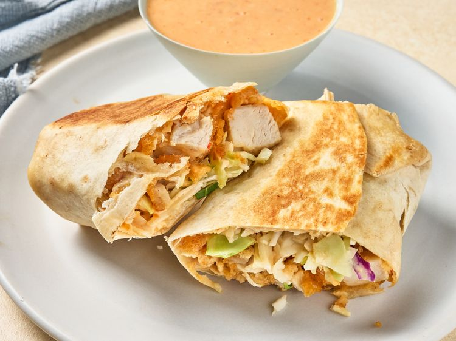

Burrito
Home

Burritos
Burritos recheados com frango e molho picante.
Ingredientes
- Meio copo de maionese.
- 1/4 de um copo de molho de pimenta agridoce.
- 2 colheres de sriracha.
- 12 tiras de frango congeladas.
- 4 tortillas.
- 2 copos de coleslaw mix.
Passo a passo
- Misture a maionese, o molho de pimenta e o molho Sriracha em uma tigela pequena até obter uma mistura homogênea e deixe de lado.
- Prepare as tiras de frango na fritadeira elétrica de acordo com as instruções da embalagem e corte-as em pedaços pequenos.
- Misture o frango com o molho até que esteja completamente coberto. Divida a mistura de frango entre as tortilhas e coloque-as logo abaixo do centro de cada uma.
- Cubra uniformemente com a mistura de repolho. Dobre levemente as laterais sobre o recheio e enrole a tortilha a partir da parte inferior.
- Se necessário faça em duas levas, derreta a manteiga em uma frigideira antiaderente grande em fogo médio-alto. Coloque os burritos, com a emenda para baixo, na frigideira quente e cozinhe até dourar, por cerca de 2 minutos. Vire e cozinhe o outro lado até dourar também, por mais 2 minutos.